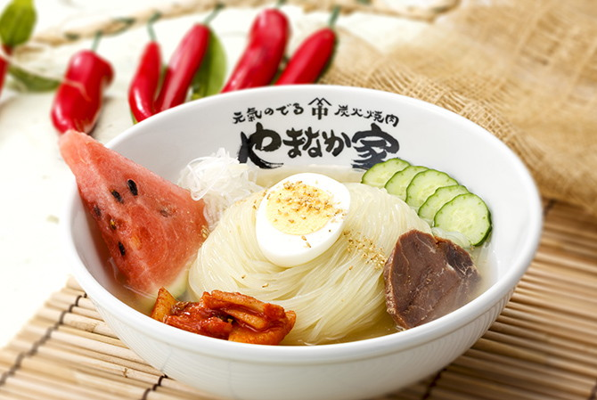
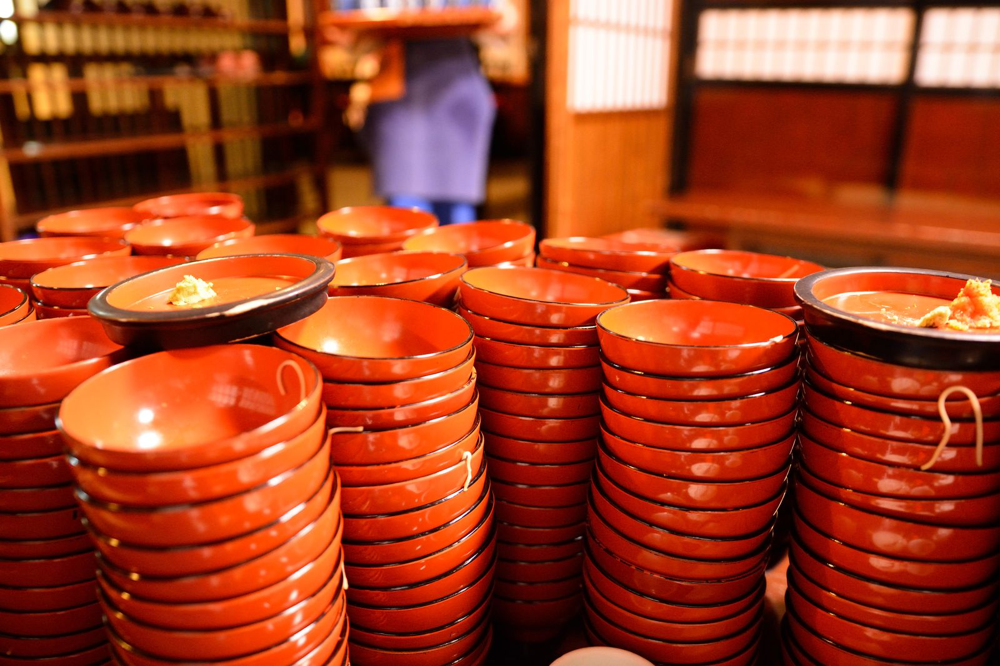

じゃじゃめん
かき混ぜた状態は決して美しいとはいえませんが、みそ味に、甘み・酸味・辛味が入り交じった味わいはなんとも複雑で奥深いものです。

れーめん
盛岡冷麺の麺は、コシが強く、表面はツルッと喉ごしが良いのが特徴です。 しかも冷たいスープなので、麺のコシの強さをいっそう堪能することができます。

わんこそば
一口そばを、お好みの薬味を加えて召し上がっていただくもので、お客様が満腹になりお椀にふたを閉めるまで続けられるものです。